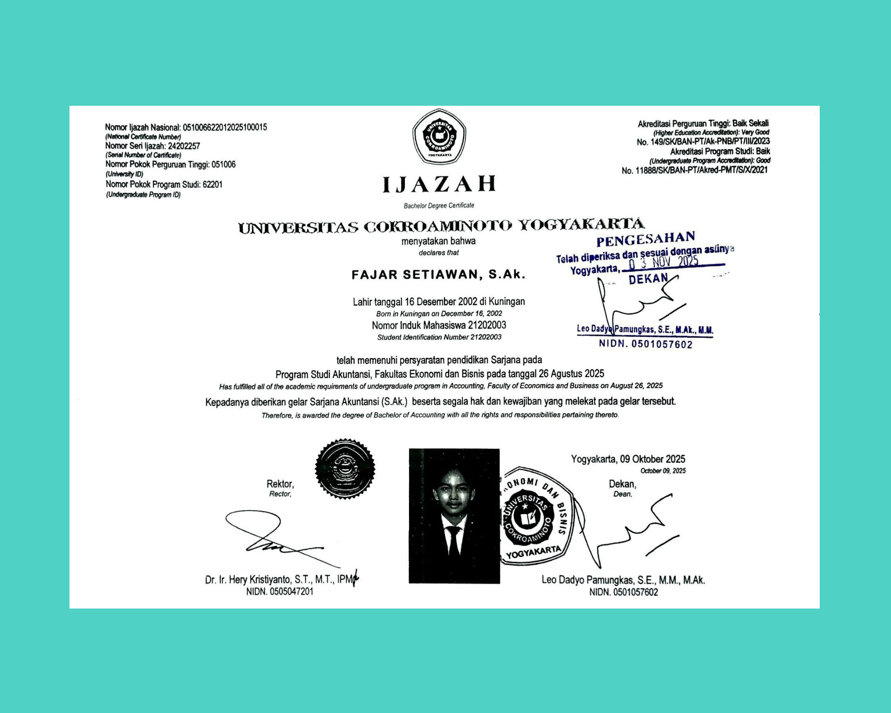
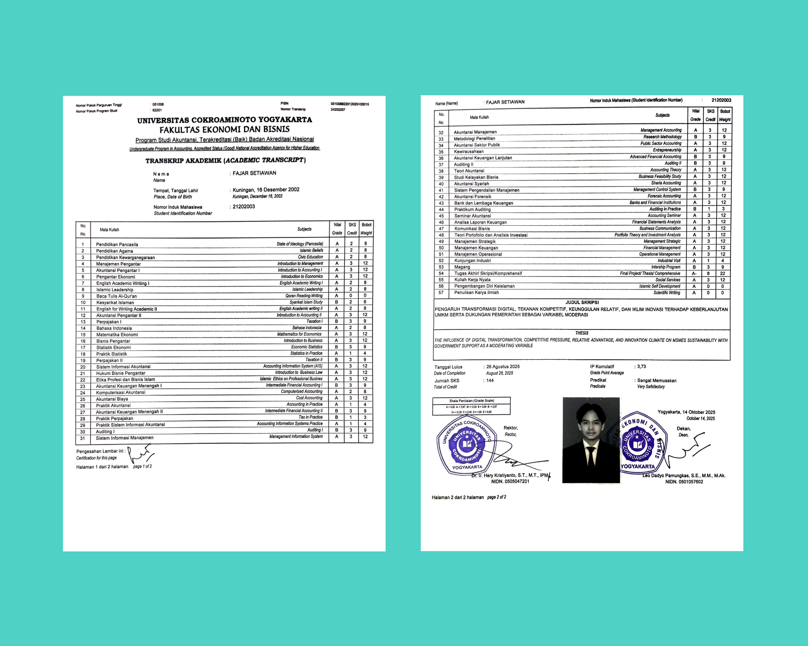
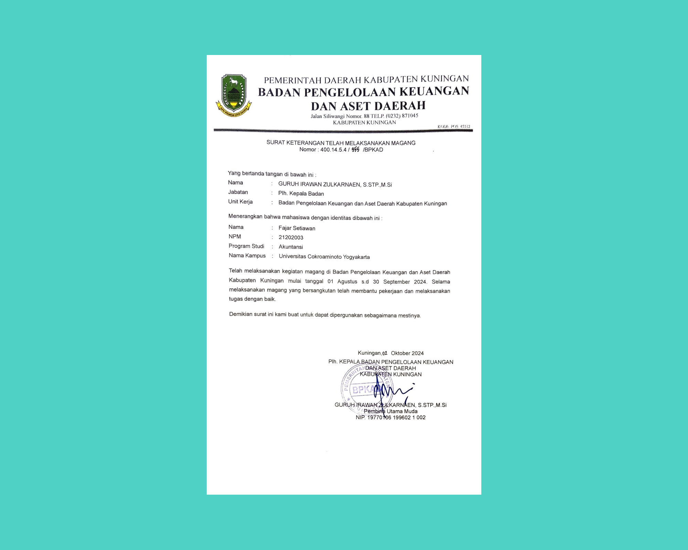
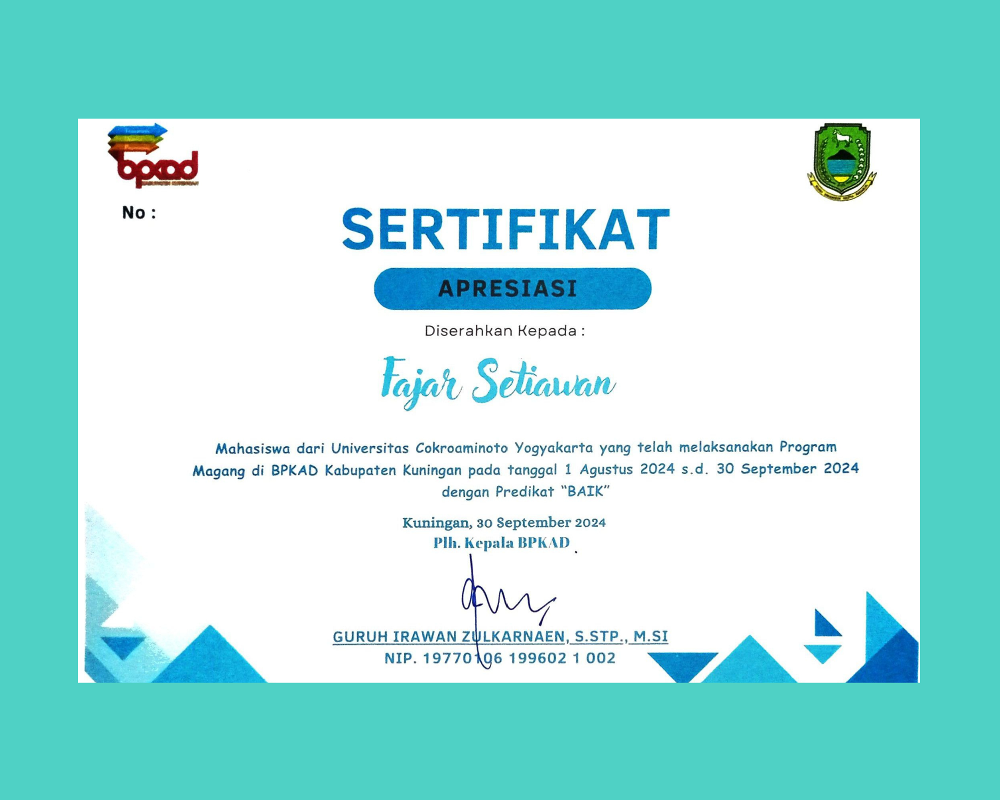
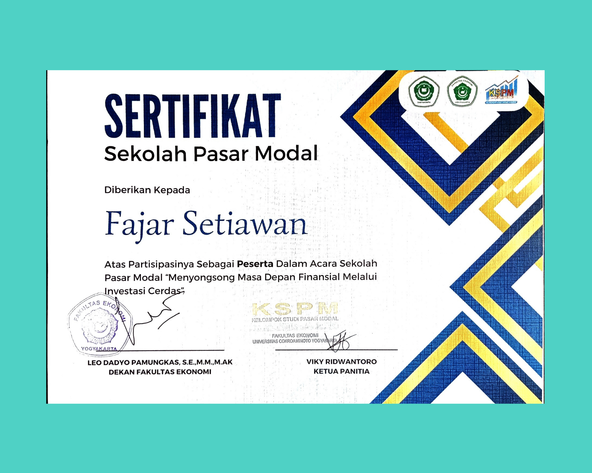
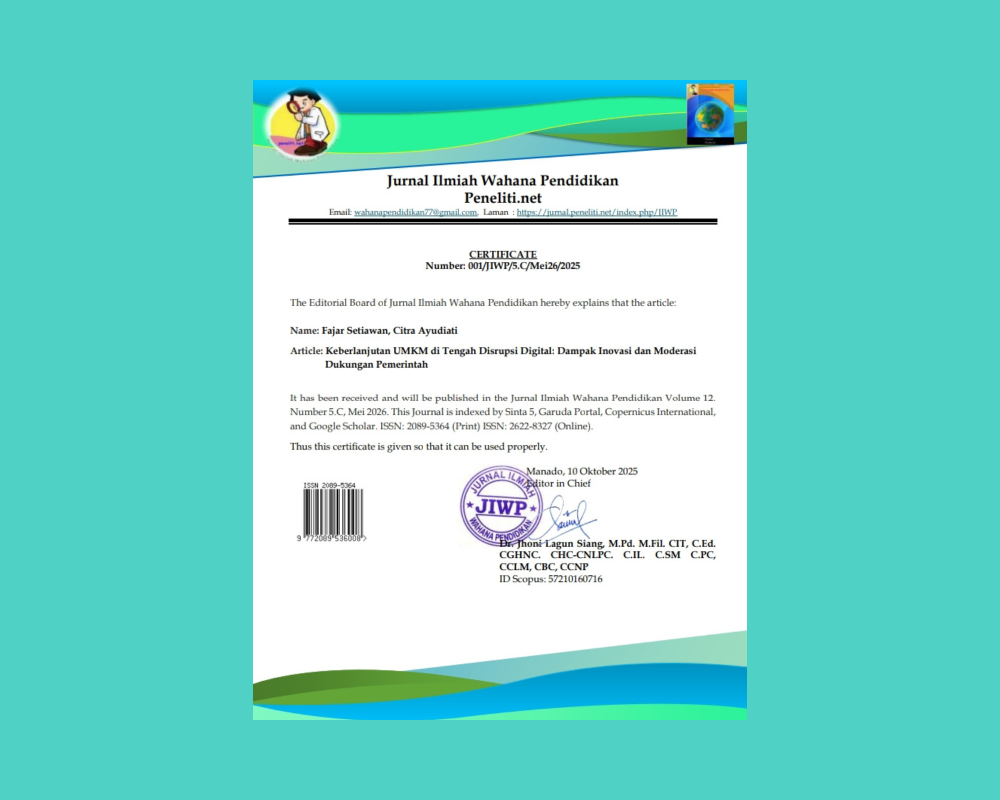
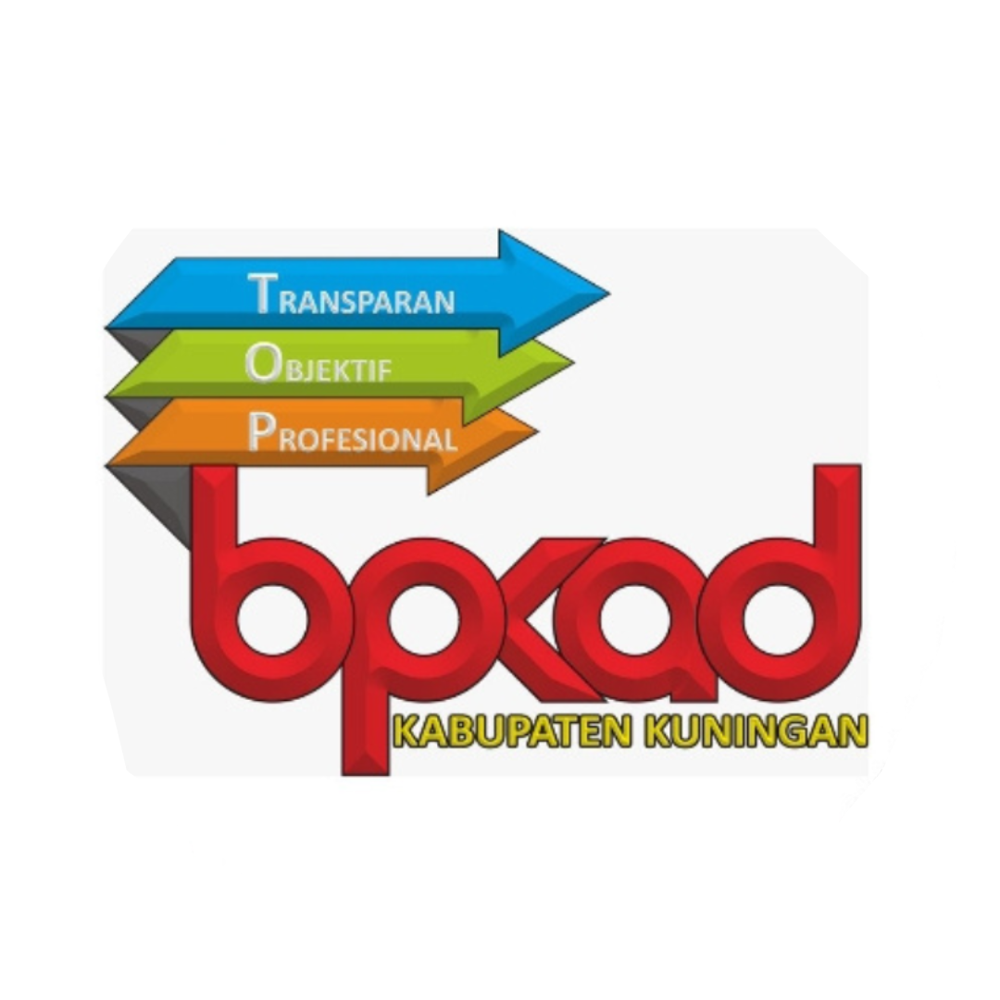
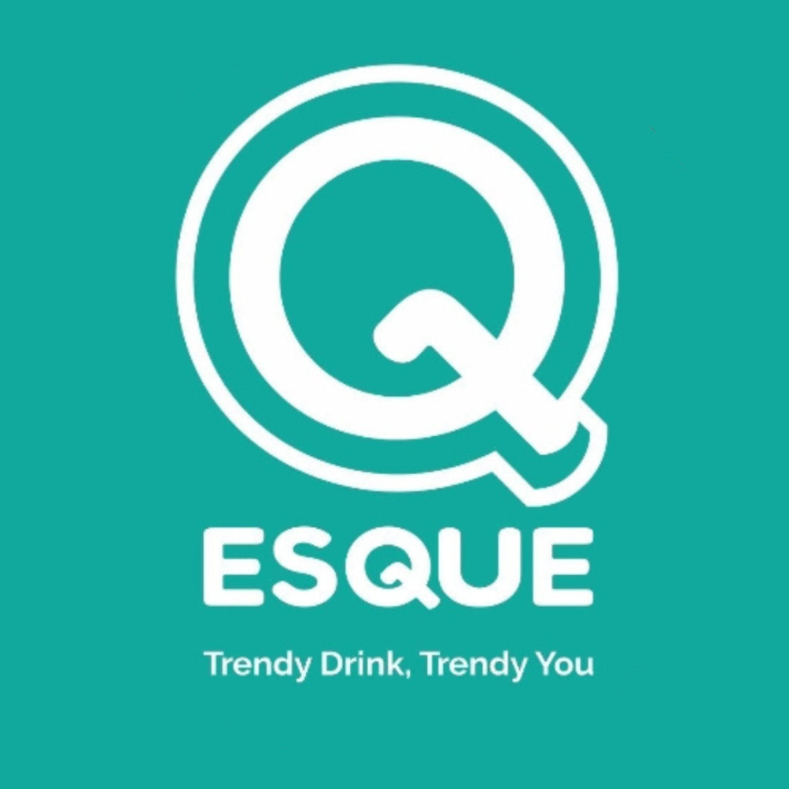

Open to Junior Accounting & Finance Roles | Motivated accounting graduate with strong analytical skills, experienced in financial reporting, data processing, and Excel-based analysis.
Month of Experience
Completed Project
Hire Companies
Participated in case study based projects as part of professional competency development, involving analytical thinking, problem solving, and practical application of academic knowledge.
Prepared complete MSME financial statements by recording and organizing financial transactions and compiling income statements, balance sheets, and cash flow statements in accordance with SAK EMKM using Microsoft Excel and Word to ensure accurate data processing and reporting, thereby improving financial transparency and accuracy, helping MSME owners better understand financial performance, and supporting informed business and tax-related decision-making.
Developed an interactive Excel dashboard to analyze and visualize financial and transactional data using Pivot Tables, Pivot Charts, formulas (SUMIFS, IF, VLOOKUP/XLOOKUP), and conditional formatting, thereby providing clear data-driven insights, enhancing trend analysis, performance monitoring, and management decision-making efficiency, while also enabling the team to quickly and accurately identify patterns, anomalies, and opportunities for improvement.
Has an educational background in Accounting (Bachelor’s degree) with competencies in financial accounting, auditing, taxation, and financial reporting, and is ready to contribute to supporting accurate and responsible business decision-making.






Has work experience demonstrating a proven track record of tangible contributions in supporting operations and effective financial management.
Aromatique Art is an FMCG company, based in Yogyakarta, Indonesia. Founded in 2005, Aromatique Art has three perfumery brands: Lab Art, Aromatique Perfume, and Urban.

BPKAD plays a role in the planning, implementation, administration, reporting, and accountability of regional finances to support transparent, accountable, and sustainable governance.

ESQUE INDONESIA is a contemporary beverage brand under the auspices of PT Keberkahan Tujuan Utama, operating in the Food & Beverages industry.